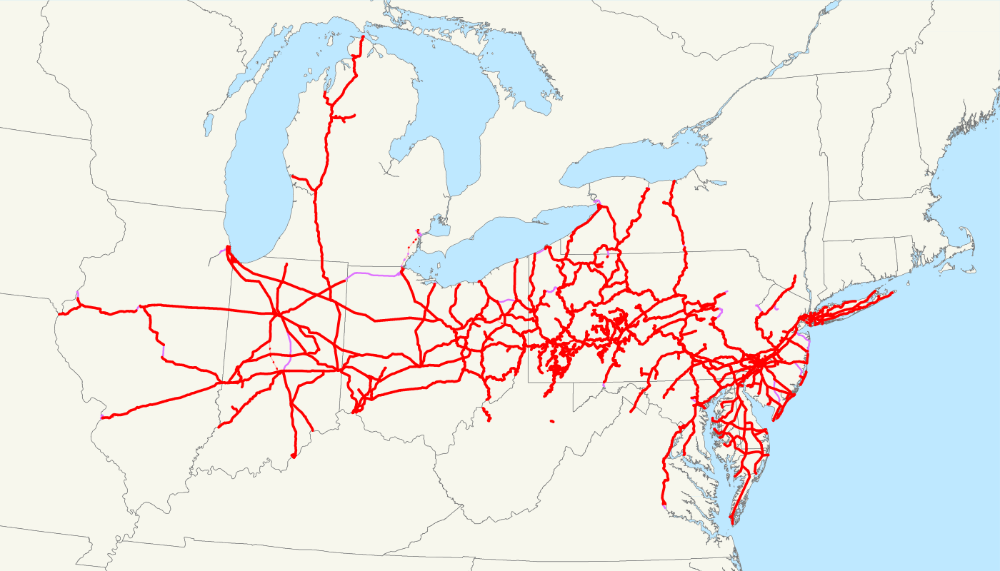
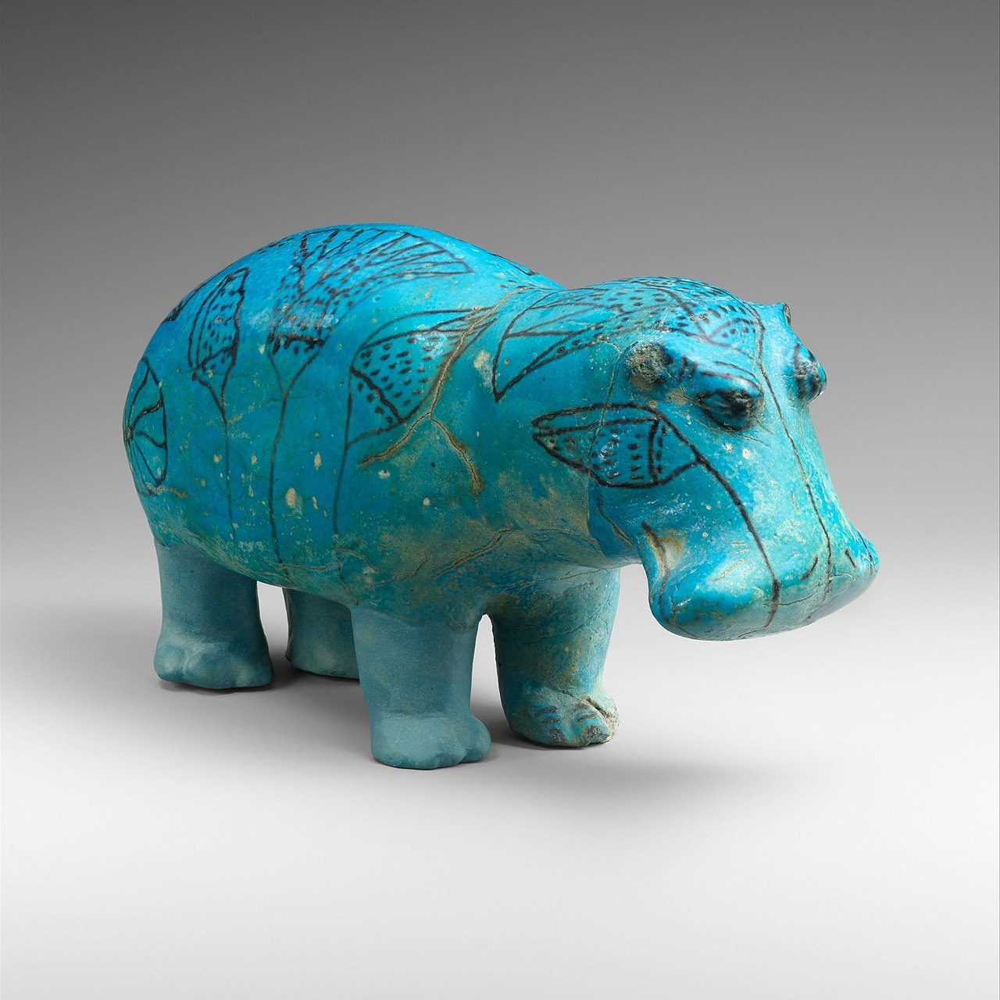
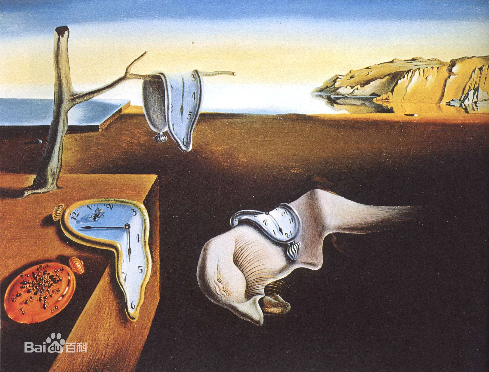
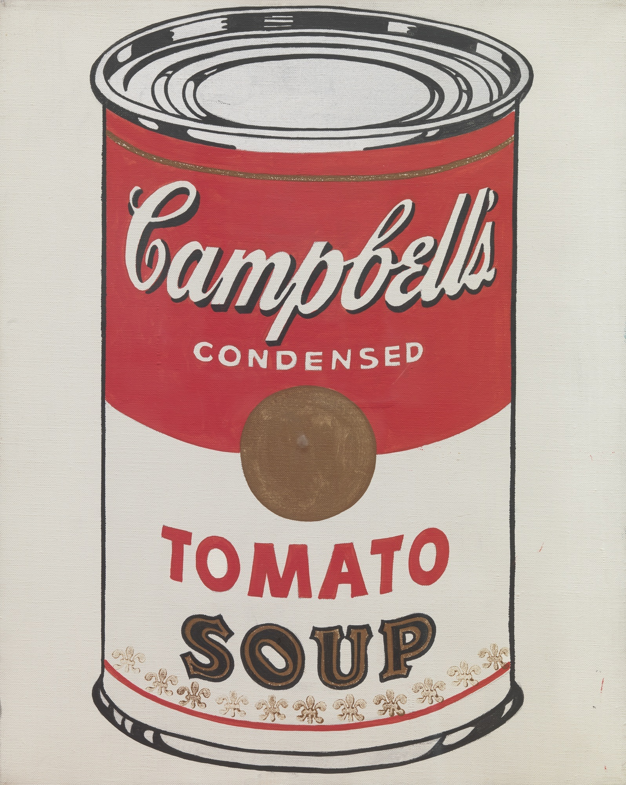

chapter6.2--handout
Background Information
John Edgar Thomson（埃德加·汤普森）
美国著名土木工程师(civil engineer)和实业家 (industrialist) ，他所操盘的项目最为人熟知的是宾夕法尼亚铁路the Pennsylvania Railroad (PRR) ，在Edgar Thomson的带领下，PRR成为当时世界上最大的企业。

P. T. Barnum (费尼尔司·泰勒·巴纳姆)
美国马戏团经纪人兼演出者。建立了世界大马戏团，他把他的马戏团称做“世界上最棒的表演” (The Greatest Show on Earth) ，表演项目包括街头杂耍，以及高级文化，例如来自欧洲有“瑞典夜莺”之称的女高音歌手珍妮·林德 (Jenny Lind) 的演唱，引起很大的轰动。
1881年与对手詹姆士‧贝里(James Bailey) 合并形成了巴纳姆贝利马戏团(Barnum and Bailey Circus) 巴纳姆一直带着他的马戏团在全美国巡演，他的马戏团充满了各种令人不可思议的神奇展品。
Trans World Airlines, Inc. (环球航空公司)
曾经是美国知名航空公司之一。1925年成立 (当时名称Western Air Express)。环球航空公司航线曾遍布美国境内及通往欧洲、加勒比海与中东等地区，曾与泛美航空公司分享美国的国际航线。2001年被美国航空公司并购。
Vocabulary
strive
💧v. to make a great effort to achieve something
动词：努力，奋斗
近义词：struggle, labor
💧We all want it and strive for it.
我们都想要工作并为此而努力。
perpetuate
💧v. to make a situation, attitude etc, especially a bad one, continue to exist for a long time
形动词：使持续，使长久（尤指不好的事物）
近义词：retain, keep up
💧We must perpetuate the system.
我们必须将此制度永久保持。
dedicated
💧adj. someone who is dedicated works very hard at what they do because they care a lot about it
形容词：满腔热忱的，有奉献精神的
近义词：devoted, special
💧But to get this format of information out there, you must write dedicated clients.
但要想从中获取这种信息格式，您必须编写专用的客户机。
perish
💧v. formal or literary to die, especially in a terrible or sudden way
动词：死亡（尤指惨死或猝死）
近义词：destroy, damage, die, flag
💧We must find sources of strength and renewal for our own spirits, lest we perish.
💧我们必须找些找些东西来强壮更新我们的精神，以免它枯萎。
Crush Your Problems
- People are so proud of their names that they strive to perpetuate them at any cost.
人们特别在乎自己的名字，所以努力想让自己的名字永存下来，不论付出什么代价。
💧常见词组：strive to：致力于，力争。
perpetuate 使...永恒
这个说法我们也可以套用到其他地方：
eg:
Picasso’s work is so precious that we should strive to perpetuate it as it deserves.
毕加索的作品值得我们努力保护，让它得以永存。 - Libraries and museums owe their richest collections to people who cannot bear to think that their names might perish from the memory of the race.
图书馆和博物馆把他们能够拥有丰富藏品归功于：那些渴望把自己的名字永远流传下去的捐赠者。
💧cannot bear to do sth. 无法忍受...
💧这里有个常见词组：owe to
我们知道owe本身有“欠钱”的意思。
e.g. The company owes money to more than 60 banks.
这家公司欠六十多家银行的钱。
💧owe to还有归因于，类似：attribute to
e.g. I always suspected she owed her first job to her friendship with Roger.
我总是觉得她得到她的第一份工作是由于她与罗杰的友谊。
Content Analysis
今天的内容中，卡叔又给出了我们更多例子说明记住别人的名字有多重要：
安德鲁卡耐基掌握“记得并尊重名字”这个秘密后变得富可敌国。德克萨斯商业银行股份有限公司董事长本顿·乐福也认为：
One way to warm it up, is to remember people’s names.
一种让人感到温暖的方法是记住别人的名字。
作者在举了一系列商业政治大咖之后又举了一名相对平凡的TWA空乘人员的例子：乘客对于自己名字被记住并被称呼的评价是让他觉得这家航空公司已经非常个性化，这对他来说很重要。
人们都重视自己的名字，尽量设法让自己的名字留传下去，甚至愿意付出任何的代价。
People are so proud of their names that they strive to perpetuate them at any cost.
比如富人会给作家钱让他们以自己的名义出书，捐赠者的姓名会刻在图书馆和博物馆上被永久流传。
所以卡叔的核心观点再次得到证实，尊重别人的名字，通过这种方式来表达对别人的重视，你学会了吗？
Today's Bonus
今天的内容中，卡叔提到了两个纽约很著名的文化场所，纽约公共图书馆（New York Public Library）和The MET（大都会艺术博物馆）。今天的彩蛋就给大家分享一下纽约很赞的博物馆们（篇幅有限只推私藏TOP3）～有空去的时候一定要看看哦～
- The MET
作者在举了一系列商业政治大咖之后又举了一名相对平凡的TWA空乘人员的例子：乘客对于自己名字被记住并被称呼的评价是让他觉得这家航空公司已经非常个性化，这对他来说很重要。
大都会艺术博物馆（Metropolitan Museum of Art)是美国最大的艺术博物馆，也是世界著名博物馆。位于纽约第五大道（Fifth Avenue）82街。
它是与以下三个博物馆齐名的世界四大博物馆之一：
英国伦敦的大英博物馆（British Museum）
法国巴黎的卢浮宫（Musée du Louvre）
俄罗斯圣彼得堡的艾尔米塔什博物馆（Hermitage Museum）
并且，它与同在纽约的联合国总部（United Nations Headquarters）一起，构成了人类过去跟未来的两大交汇点，MET记录着人类的过去，而UN Headquarters则在描绘、规划着世界的未来。截至目前，该馆目前共收藏有300万件展品。现在是世界上首屈一指的大型博物馆。
必看的展品：
💧比如这只位于埃及馆的小河马William是Met的吉祥物（mascot of the Met）

💧Met中世纪铠甲馆
💧埃及馆的木乃伊们
💧梵高自画像
（还有很多其他代表性化作）
💧毕加索笔下的格特鲁德·斯泰因
（可能有同学不知道她，不过Gertrude Stein是巴黎艺术沙龙圈子里的绝对KOL)
MET的展品一天是绝对看不完的，如果要细致的参观，至少安排2～3天的时间哦～ - MoMA
现代艺术博物馆（Museum of Modern Art）位于曼哈顿中城（Manhattan Mid Town），如果说Met是历史的典范，MoMA则是当代艺术的集大成之地。
来看一下MoMA的展品吧～
💧这幅不用我介绍：
💧莫奈的睡莲们
💧你们记得胡子翘上天的达利蜀黍吗？

💧波普艺术领袖安迪·沃霍尔：
 - 美国自然历史博物馆
《博物馆惊魂夜》(Night at the Museum)大家看过吗？里面那个博物馆简直棒呆了，这座博物馆就是美国自然历史博物馆(American Museum of Natural History)，世界上规模最大的自然历史博物馆，美国主要自然历史研究和教育中心之一。
其古生物和人类学的收藏在世界各博物馆中占居首位，除采自美国境内的标本外，南美洲、非洲、欧洲、亚洲、澳洲的代表性标本也都有收藏。里面的陈列内容极为丰富，包括天文、矿物、人类、古生物和现代生物5个方面，有大量的化石、恐龙、禽鸟、印第安人和爱斯基摩人的复制模型。所藏宝石、软体动物和海洋生物标本尤为名贵。